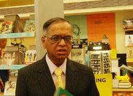

Murthy started his career at IIM Ahmedabad as chief systems programmer. There
he worked on India's first time-sharing computer system and designed and
implemented a BASIC interpreter for Electronics Corporation of India Limited.
He
started a company named Softronics. When that company failed after about a year
and a half, he joined Patni Computer Systems in Pune.
Murthy and six software professionals founded Infosys in 1981 with an initial
capital injection of Rs 10,000, which was provided by his wife Sudha Murthy.
Murthy served as the CEO of Infosys for 21 years from 1981 to 2002 and was
succeeded by co-founder Nandan Nilekani.
At Infosys he articulated, designed and
implemented the Global Delivery Model for IT services outsourcing from India. He
was chairman of the board from 2002 to 2006, after which he became chairman of
the board and Chief Mentor.In August 2011, he retired from the company, taking
the title chairman Emeritus.
Murthy serves as an independent director on the corporate board of HSBC and has
served as a director on the boards of DBS Bank, Unilever, ICICI and NDTV. He
also serves as a member of the advisory boards and councils of several
educational and philanthropic institutions, including Cornell University,
INSEAD, ESSEC, Ford Foundation, the UN Foundation, the Indo-British Partnership,
Asian Institute of Management, a trustee of the Infosys Prize, a trustee of the
Institute for Advanced Study in Princeton, and as a trustee of the Rhodes Trust.
He is also Chairman of the Governing board of Public Health Foundation of India.
He serves on the Asia Pacific Advisory Board of British Telecommunications. In
2005 he co-chaired the World Economic Forum in Davos.
On 1 June 2013, Murthy returned to Infosys as Executive chairman and Additional
Director. On 12 June 2014 it was announced that Murthy would step down as
Executive chairman effective 14 June. He would continue as Non-Executive
chairman till 10 October. On 11 October, Murthy will be designated as chairman
Emeritus.
Murthy also serves on the strategic board which advises the national law firm,
Cyril Amarchand Mangaldas, on strategic, policy and governance issues.
His wife, Sudha Murthy née Kulkarni, a B.E. in Electrical Engineering from the
B.V.Bhoomaraddi College of Engineering & Technology, Hubballi, stood first in
her class and received a gold medal from the Chief Minister of Karnataka.
Thereafter, she completed an M.E. in Computer Science from the Indian Institute
of Science, standing first in her class and receiving a gold medal from the
Indian Institute of Engineers now an Indian social worker and author. She
actively continues her philanthropic work through the Infosys Foundation. He has
two children, a son Rohan Murty and a daughter Akshata Murthy.
Rohan is a Junior
Fellow in the Harvard Society of Fellows. On 1 June 2013, he joined Infosys as
an executive assistant to his father. He left Infosys effective 14 June 2014.
Akshata completed her MBA from Stanford Business School, and is married to Rishi
Sunak a British Conservative MP